Nesting and Accessing Data in D3v4
May 2 2017 • 17 min read
Image by annca
- Introduction
- Before Nesting
- Nest Level 1
- Rollup Level 1
- Nest Level 2
- Creating Dropdown Menus from 1st Level Nests
- Rollup Level 2
- Creating Dropdown Menus from 2nd Level Nests
Introduction
While learning how to make interactive data visualizations using d3.js, I ran into an issue with something new to me: nests. The general idea is that data sometimes needs to be grouped based on certain variables and the groups need to be analyzed or graphed separately. Seems like a simple enough concept, but in practice, well…I got a little lost in the weeds.
I’m writing this post as a resource for how to nest and access nested d3 data both for myself and for anyone else who could benefit from my exploration of this topic.
So, let’s start at the beginning.
Technical Details
In this post I am using:
- d3.v4
Before Nesting
For this post, I’m going to be building upon the same dataset. The first version looks like this:
## Month Sales
## 1 Jan 87
## 2 Feb 3
## 3 Mar 89
## 4 Apr 56
## 5 May 1
## 6 Jun 17These data are just random numbers, but for our purposes, we’ll say that they are monthly sales of strawberries. And although there are a few ways we could represent this totally fake data, for demonstration purposes, we’ll use a line chart.
The basics for creating a line chart in d3 are outside the scope of this post, but if you need more background, this is a good place to start.
Here’s what the final product looks like:
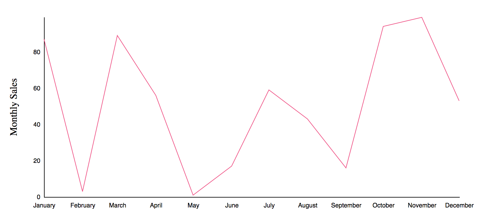
The javascript, HTML and CSS needed to generate this figure are available here.
Now, if we use console.log() to look at the structure of the data, it looks like this:
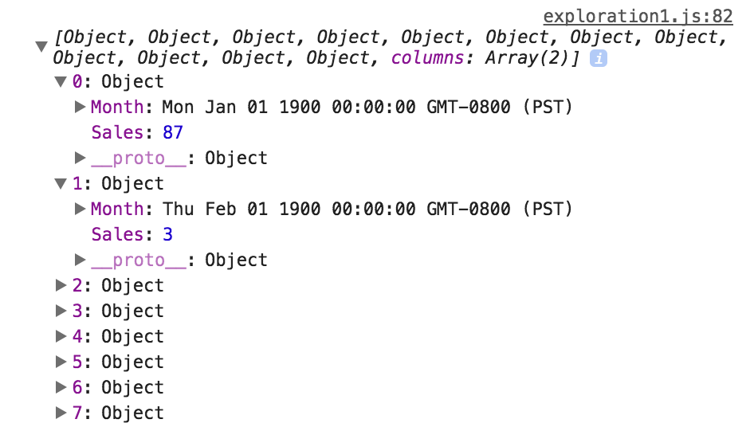
So there’s an array with 12 objects inside: one for each month. And each object contains both the month variable and the Sales count. When generating the path for the line graph, we can access the data like this:// Define the line
var valueLine = d3.line()
.x(function(d) { return x(d.Month); })
.y(function(d) { return y(+d.Sales); })
// Add the path element
svg.selectAll(".line")
.data([data])
.enter()
.append("path")
.attr("class", "line")
.attr("d", valueLine)So far so good. Now let’s expand the data and add a nest. # Nest Level 1 Ok, so now that we’ve plotted our monthly fake strawberry sales for one year, let’s add in our (again, randomly generated) grape and blueberry sales data. That requires adding one column to look like this:
## Month Sales Fruit
## 1 Jan 87 strawberry
## 2 Feb 3 strawberry
## 3 Mar 89 strawberry
## 4 Apr 56 strawberry
## 5 May 1 strawberry
## 6 Jun 17 strawberryIf we try plotting the line chart the exact same way as before, we end up with something that looks like this:
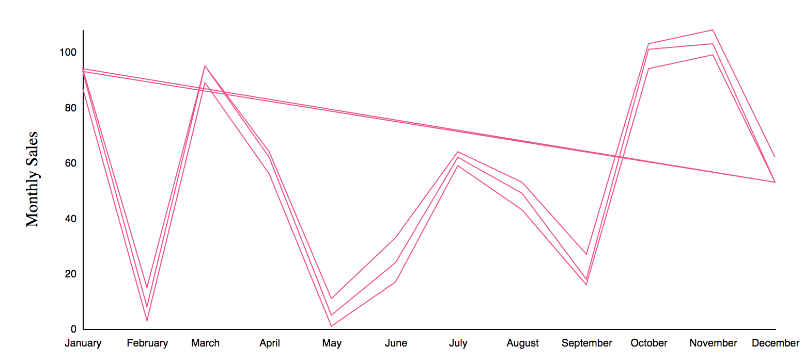
Whoops, it looks like d3 tried to plot all of our data as one continuous line, which makes sense because we didn’t tell it that there are 3 separate categories here. For native R users, the solution to this issue would be simple. In ggplot2, you’d just use thegroup= and/or color= options like this:
library(ggplot2)
ggplot(ex2, aes(x = Month, y = Sales, group = Fruit, color = Fruit)) + geom_path()  In d3, this is where nests come in.
Looking for the actual documentation? Find it here.
In d3, this is where nests come in.
Looking for the actual documentation? Find it here.
Just like with ggplot, we need to figure out which variable we want to group our data by. In this case, we want a separate line for each fruit’s sales. In R that’s group = Fruit and in d3, you need to set the key to the Fruit variable.
It looks like this:
var nest = d3.nest()
.key(function(d){
return d.Fruit;
})
.entries(data)At this stage, since we are simply grouping the data, this nest has only two parts:
- The key (in this case, the d.Fruit variable)
- The entries (the variable that holds the data that you are nesting)
Perhaps unsurprisingly, doing this changes the structure of our data.
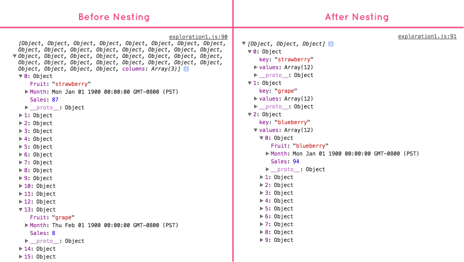
To access the nested data and generate multiple lines, we can do this:
// Define the line
var valueLine = d3.line()
.x(function(d) { return x(d.Month); })
.y(function(d) { return y(+d.Sales); })
// Draw the line
svg.selectAll(".line")
.data(nest)
.enter()
.append("path")
.attr("class", "line")
.attr("d", function(d){
return valueLine(d.values);
});Notice that there are only two things that have changed here, but they’re important things!
.data([data])became.data(nest)- Make sure to change the data source to your new nested data
.attr("d", valueLine)became.attr("d", function(d){ return valueLine(d.values); })- Instead of being able to generate a line directly from the data as is, you need to now specify that you’d like to make a path from the values of the data (in this case, our Sales variable)
Just by making these small changes, you’ll see that we now have 3 separate lines. Hooray!
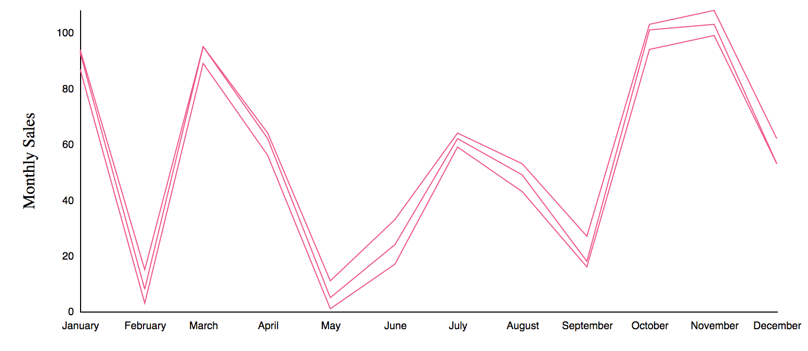
The entire js, html, css, and csv scripts are included here.
Rollup Level 1
Now that we’ve been able to draw 3 separate lines (one for each fruit), we can see the theoretical monthly sales for each fruit. But what if we wanted to compare the annual sales for each fruit instead?
For native R-users, the easiest option may come from the dplyr package and the group_by and summarise functions. That may look something like this:
library(dplyr)
annualSales <- ex2 %>%
group_by(Fruit) %>%
summarise(Annual = sum(Sales))
annualSales## # A tibble: 3 × 2
## Fruit Annual
## <chr> <int>
## 1 blueberry 729
## 2 grape 673
## 3 strawberry 617So we end up with data that has only one data point for each fruit. To replicate this in d3, we can again use d3.nest but in combination with the function d3.rollup.
It would look like this:
var nest = d3.nest()
.key(function(d){
return d.Fruit;
})
.rollup(function(leaves){
return d3.sum(leaves, function(d) {return (d.Sales)});
})
.entries(data)The rollup function generates a sum of the sales data for each Fruit value, similarly to the dplyr group_by and summarise functions.
The data structure then looks like this:
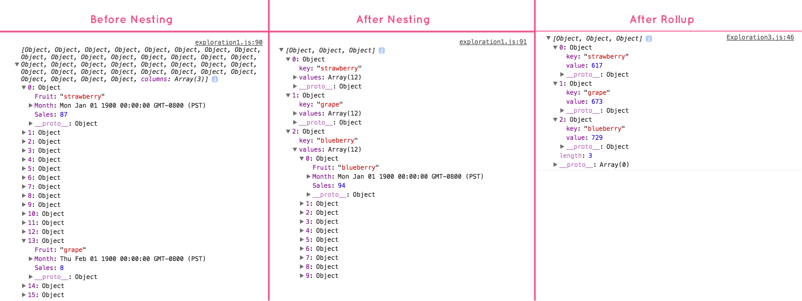
Since we’ve reduced the data to just 3 values (one for each fruit), we can no longer represent the data using a line chart. Instead, here’s a bar chart generated with the nested and rolled-up data.
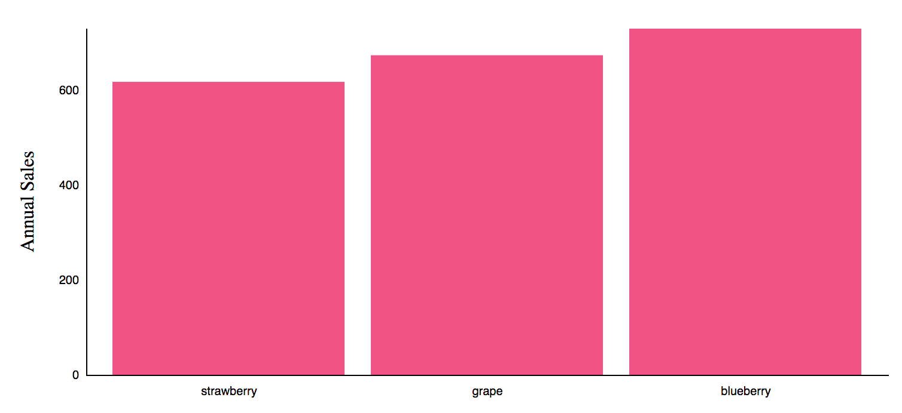
Although the code is different due to the difference in chart type, here is the code to generate the bars.
// Draw the bars
svg.selectAll(".rect")
.data(nest)
.enter()
.append("rect")
.attr("class", "bar")
.attr("x", function(d) { return x(d.key); })
.attr("y", function(d) { return y(d.value); })
.attr("width", x.bandwidth())
.attr("height", function(d) { return height - y(d.value); });Notice that the d.key (remember, the key is our Fruit variable) is used for the x component of creating the shapes. Similarly the d.value (this is our rolled up Sum of Sales data) is used for the y component of the bars.
Sorting Keys
If necessary, you can also sort the keys using the .sortKeys function. For instance, to put our fruit data in alphabetical order (by fruit), our new nesting function may look like this:
var nest = d3.nest()
.key(function(d){
return d.Fruit;
})
.sortKeys(d3.ascending)
.rollup(function(leaves){
return d3.sum(leaves, function(d) {return (d.Sales)});
})
.entries(data)Which results in an updated chart like this:
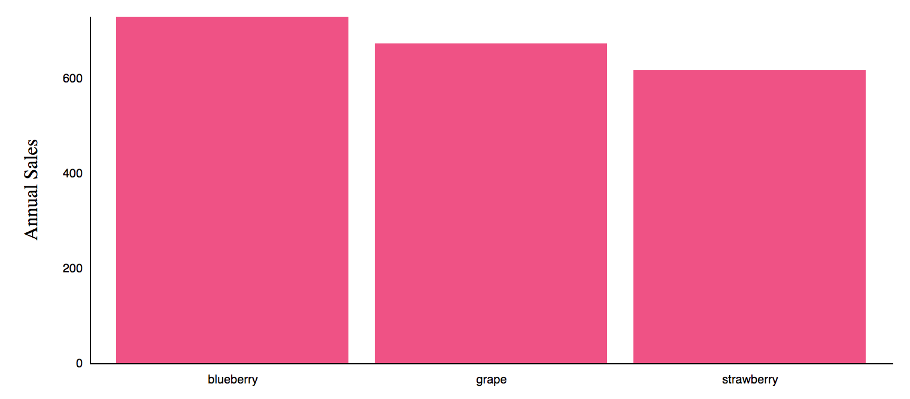
The full code for this example is available here.
Nest Level 2
We’re now familiar with how d3.nest() and d3.rollup() work, but we don’t have to stop at one level. For instance, imagine that we now have multiple years of fruit sale data.
## Month Sales Fruit Year
## 1 Jan 87 strawberry 2016
## 2 Feb 3 strawberry 2016
## 3 Mar 89 strawberry 2016
## 4 Apr 56 strawberry 2016
## 5 May 1 strawberry 2016
## 6 Jun 17 strawberry 2016For this example, the data includes values for 2015 and 2016.
Now, we may want to nest by fruit and then by year. In this case, we don’t need the rollup, just the keys. First by fruit and then by year.
var nest = d3.nest()
.key(function(d){
return d.Fruit;
})
.key(function(d){
return d.Year;
})
.entries(data)Our resulting data structure looks like this:
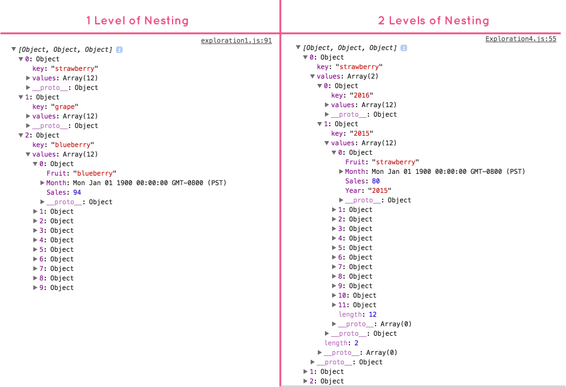
The original sales data is still present, but notice that it’s now two levels down. That’ll make it slightly more challenging to access for making graphics with it.
Here’s how we get to it:
First, we need to bind the upper levels of data to “groups”, or in d3, g-elements.
var fruitGroups = svg.selectAll(".fruitGroups")
.data(nest)
.enter()
.append("g")This creates 3 groups: strawberry, grape, and blueberry. These were our first keys, so they are the first things to be grouped.
Now, we need to access the data inside each group by appending path elements like this:
var paths = fruitGroups.selectAll(".line")
.data(function(d){
return d.values
})
.enter()
.append("path");This leaves us with 3 arrays: strawberry, grape, and blueberry. Within each array we’ll find 2 paths: one bound with 2015 data and one bound with 2016 data. Now all that’s left is to actually draw the path element.
paths
.attr("d", function(d){
return d.values
})
.attr("class", "line")After we’ve added that bit of code, this is the resulting graph:
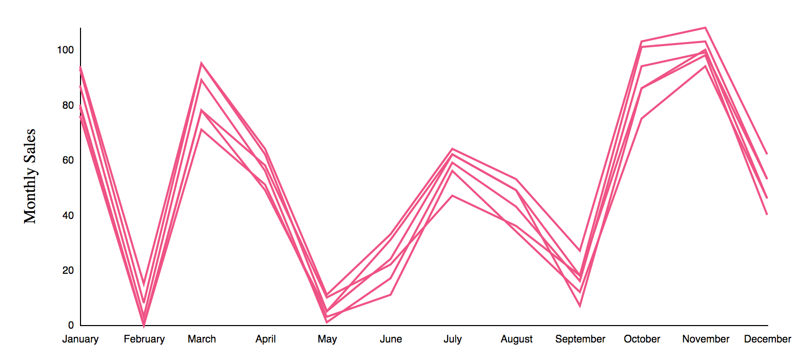
Awesome! We now have 6 lines on our chart. It’s a little hard to tell the difference between our lines though, so we can add some styling.
Styling Nested Elements
First, let’s make the color of the line reflect which fruit the data represents. We can do this by manually defining the colors for each. Here, we’ll do that manually making strawberry pink, grapes green, and blueberry blue-ish purple.
// Set the color scheme
var colors = d3.scaleOrdinal()
.domain(["strawberry", "grape", "blueberry"])
.range(["#EF5285", "#88F284" , "#5965A3"]);Now, adding a single line of code to the end of our grouping variable like this will adjust the color for each element:
var fruitGroups = svg.selectAll(".fruitGroups")
.data(nest)
.enter()
.append("g")
.attr("stroke", function(d){ return colors(d.key)}); // Adding color!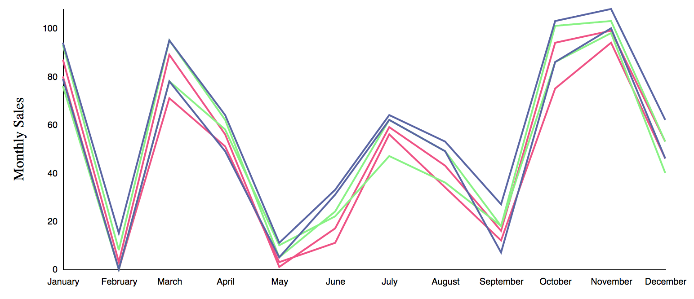
Getting closer! But we have a 2015 line for each fruit and a 2016 line for each fruit. Let’s separate those out by line type, adding a dash for 2015 lines.
That’s pretty simple, we can just add this line to the end of our path attributes:
paths
.attr("d", function(d){
return valueLine(d.values)
})
.attr("class", "line")
.style("stroke-dasharray", function(d){
return (d.key == 2015) ? ("3, 3") : ("0, 0")}); // Adding dashes to 2015!And we end up with this:
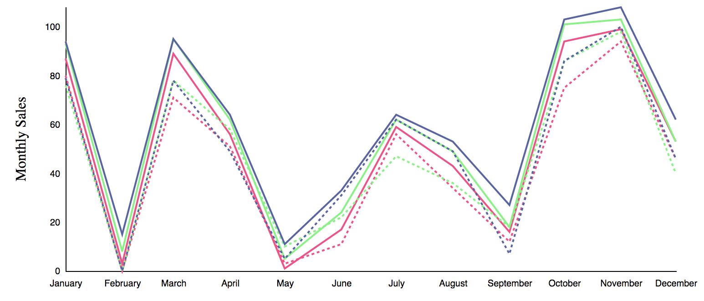
Yay! We now have 6 lines, 2 for each of our 3 fruits.
All of the code for this chart is available here.
Rollup Level 2
We’re doing great so far and our code is sufficient enough to handle more data. Let’s add data for other years for each fruit’s sales.
I’ve added data so that each fruit now has 4 years worth of (remember, totally fake) data.
Here’s what 2 of the views look like:
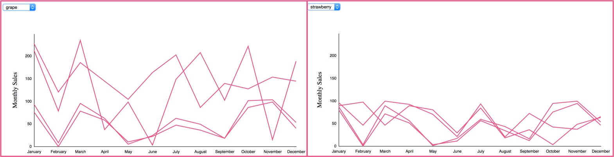
You’ll notice that the view for strawberries looks a little strange because of the Y-axis. Currently, we set our Y-domain like this:
y.domain([0, d3.max(data, function(d) { return d.Sales; })]);We assign the Y-domain from 0 to the maximum Sales value across all of our data. So, even though the maximum number of fake strawberries sold in a month was 99, the Y axis extends to 250 because there was a month where either blueberry or grape sales reached 250. Once again, this is where nests can come to the rescue. We just need to determine the maximum number for each fruit and update the Y-domain dynamically.
We’ll start back at the nest function.
To find the maximum value for each Fruit, we need to perform a d3.rollup() just like we did in #rollup-level-1. But in this case, we don’t want to lose the original values by performing the rollup. So, we want the rolled-up data and the second key on the same level.
That would look like this:
var nest = d3.nest()
.key(function(d){
return d.Fruit;
})
.rollup(function(leaves){
var max = d3.max(leaves, function(d){
return d.Sales
})
var year = d3.nest().key(function(d){
return d.Year
})
.entries(leaves);
return {max:max, year:year};
})
.entries(data)The resulting data structure would then look like this:
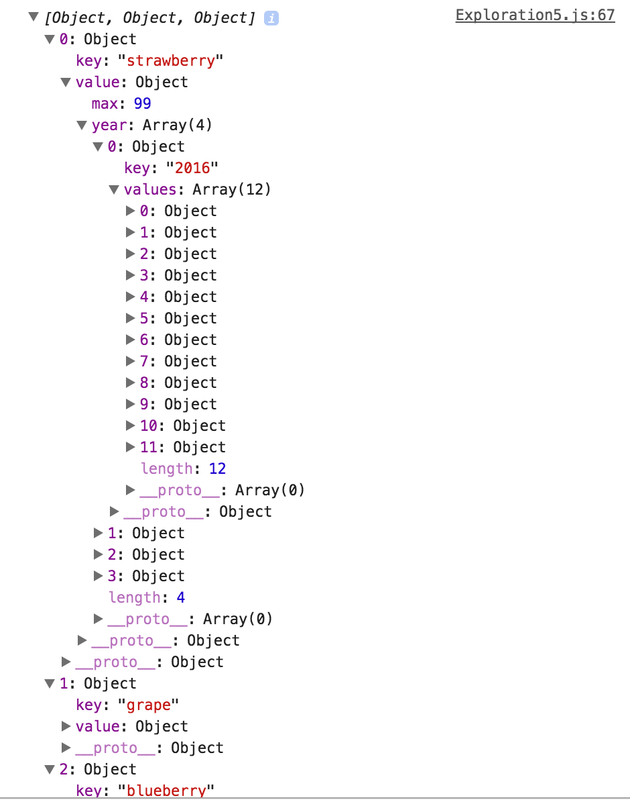
Now it’s just a matter of accessing and using this data. We already have a good initial structure for how to build this figure, so now to update it.
Here’s the updated function to create the initial graph:
// Function to create the initial graph
var initialGraph = function(fruit){
// Filter the data to include only fruit of interest
var selectFruit = nest.filter(function(d){
return d.key == fruit;
})
var selectFruitGroups = svg.selectAll(".fruitGroups")
.data(selectFruit, function(d){
return d ? d.key : this.key;
})
.enter()
.append("g")
.attr("class", "fruitGroups")
.each(function(d){
y.domain([0, d.value.max])
}); // this is new! And necessary to change the y-axis
var initialPath = selectFruitGroups.selectAll(".line")
.data(function(d) { return d.value.year; })
.enter()
.append("path")
initialPath
.attr("d", function(d){
return valueLine(d.values)
})
.attr("class", "line")
// Add the Y Axis
var yaxis = svg.append("g")
.attr("class", "y axis")
.call(d3.axisLeft(y)
.ticks(5)
.tickSizeInner(0)
.tickPadding(6)
.tickSize(0, 0));
// Add a label to the y axis
svg.append("text")
.attr("transform", "rotate(-90)")
.attr("y", 0 - 60)
.attr("x", 0 - (height / 2))
.attr("dy", "1em")
.style("text-anchor", "middle")
.text("Monthly Sales")
.attr("class", "y axis label");
}There’s a few minor, but notable changes to make this work:
- Notice the addition of
.each(function(d){ y.domain([0, d.value.max]) });to the end of the group. This adjusts the Y domain of each view, based on the maximum value calculated in our rollup function. - We changed
.data(function(d) { return d.values; })to.data(function(d) { return d.value.year; }). This specifies that we are looking for the values within the newly created year section of our data. - I’ve also moved the creation of the Y axis within this function so that the initial figure is generated with the appropriate Y axis scale.
Now to update our update function.
var updateGraph = function(fruit){
// Filter the data to include only fruit of interest
var selectFruit = nest.filter(function(d){
return d.key == fruit;
})
// Select all of the grouped elements and update the data
var selectFruitGroups = svg.selectAll(".fruitGroups")
.data(selectFruit)
.each(function(d){
y.domain([0, d.value.max])
});
// Select all the lines and transition to new positions
selectFruitGroups.selectAll("path.line")
.data(function(d) { return d.value.year; })
.transition()
.duration(1000)
.attr("d", function(d){
return valueLine(d.values)
})
// Update the Y-axis
d3.select(".y")
.transition()
.duration(1500)
.call(d3.axisLeft(y)
.ticks(5)
.tickSizeInner(0)
.tickPadding(6)
.tickSize(0, 0));
}Again, we’ve added the .each(function(d){ y.domain([0, d.value.max]) }); to the end of our group. We’ve updated the .data call to .data(function(d) { return d.value.year; }) just like in the above function. I’ve also included a way to update the Y axis based on the new data.
And that’s it!
Here’s what the graphs now look like. And check out those Y-axes!
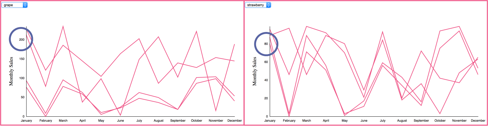
Here’s the functional version and code.